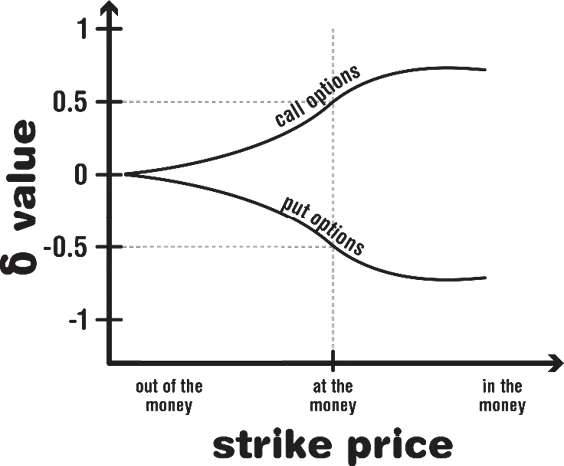
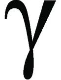
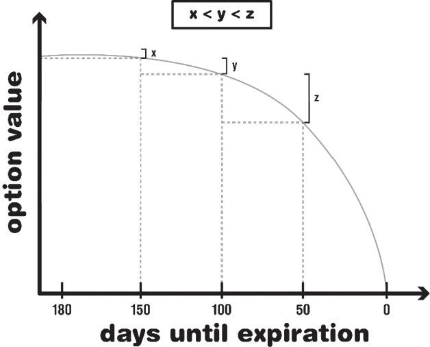

It wouldn’t be a book on options trading without the inevitable foray into the world of the Greeks. The Greeks refer to several key metrics denoted by a Greek letter, only a small handful—delta, gamma, theta, vega, and rho— are in the vocabulary of the typical options trader, with delta being the most useful.
Part of what makes delta useful is that it’s quite easy to understand. As we explained in Chapter 2, if you buy an option and suddenly the underlying stock spikes in the right direction, it’s more advantageous (and usually more profitable) to resell the option than execute the option. What the delta metric does is tell you how much the price of your option is expected to move when the underlying stock moves by a single point. Though the data provided from delta isn’t iron clad, it can prove to be an extremely useful reference point when trying to gauge the potential profitability of an option.
Deltas are always going to have an absolute value between 0 and 1,
though traders often drop the decimal place—saying the option has a 50
delta, as opposed to a .5 delta. Calls always have a positive delta and puts, a
negative delta.
Usually the delta is given, especially on brokerage sites or exchange
websites that specialize in options trading, but it’s also easy to calculate the
delta for an option. All you need is snapshots of the both the stock’s value
and the option’s value. Take a call option, for instance. Let’s say the stock is
on the market for $30, and there’s a call option with two months to go
before expiration that’s currently ATM (at the money) and a $30 call
contract that may currently be purchased for $1 per share. When the stock
goes up in value, let’s say to $32, the call option is also going to become
more valuable. (In this case the call option is suddenly $2 in the money.)
Let’s say that the call option goes from $1 per share to $2 per share. The
delta of the option is calculated by dividing the change in the option price
by the change in the stock price. In this example you get 1 divided by 2, or
.5. This is commonly referred to as a “50 delta.”
Using this formula, you can see why calculating the delta value of a put option always results in a negative number. As the price of the stock goes up, the value of the put option always goes down, so you always end up dividing a negative number by a positive number, or vice versa, resulting in a negative delta value.

One of the things that frustrates beginner-level options traders, and may turn them off to options entirely, is purchasing an option and watching the stock value move $2 or even $3 in the “right” direction only to find that the value of the option has barely changed. Many beginners first approaching the options market may be drawn to the very inexpensive, out of the money option contracts with very little time left on the contracts. Sure you can get one of these contracts for $20, but it’s not likely to make you any money. The reason for this is that the delta value of out of the money option contracts near the point of expiration is close to zero. Even if the stock moves significantly toward the money, the option may not gain any significant value. A lot of these extremely cheap, nearly expired OTM options are the equivalents of a Hail Mary pass. Learning how to read an option’s delta value can spare you from this frustration.

Gamma measures the expected change of the delta value in relation to a $1 change in the price of a stock. Remember, the delta value is anything but constant throughout the life of an option, but the extent to which it fluctuates may hinge on a few different factors, such as the proximity to the option’s expiration date.
For the beginner-level options trader, the most important thing to
understand about the gamma metric is the concept of gamma risk. If your
gamma level is high and you’re in a position to make a profit or minimize
loss by selling or exercising your option, then you may be wise to do so
since the option could quickly deteriorate.
Though gamma analysis is used by the pros, especially in risk
assessments, it’s not essential that you have a thorough understanding of
how to leverage this metric when you’re just starting out. The bottom line
of the gamma metric is that when gamma increases, the prices of your
options are more sensitive to changes in the price of the stock.
Theta measures the price change of an option in relation to a unit of time (usually a day). As you know by now, the closer an option gets to its expiration date, the less value it tends to have—all other factors being equal. What the theta metric does is quantify the extent to which this value is changing on a day-by-day basis. Theta, therefore, is a negative value. This lost value, in options jargon, is often referred to as “theta decay.”
For a beginner, you should understand that theta decay detracts from the value of an option at an ever increasing rate. If you’ve got an option you’re thinking about selling, and there are three weeks or so left in the contract, be prepared for the theta decay to make a serious dent in the value of your option. The closer you get to your expiration date, the more severe the theta decay.
In Options for Beginners, Edward Olmstead offers an illustration on theta decay using simple square roots. He says, “The magnitude of theta for an at-the-money option varies inversely as the square root of the time remaining until expiration20 .” That may seem like a bit of a mouth full, but when you consider it within the context of a real scenario it’s a bit clearer.
Again, if you can’t get your head fully around theta yet, just know that the time decay becomes more impactful the closer the option comes to expiring. Also understand, however, that theta is never the end all/be all that determines the value of your options. Any investor should realize from the moment she purchases an option that it’s going to start going down in value and that, in order for the option to prove profitable, the underlying asset must move in the right direction with a decent magnitude of delta force behind it (assuring that the option price will move in the right direction as well).

We don’t have an image of the Greek letter vega, because vega is not a real Greek letter. Vega indicates the amount of change expected in an option price for every percent change in implied volatility. Remember, options with underlying assets perceived to be highly volatile tend to be more expensive than options with more stable underlying assets. Vega is meant to show the specific degree to which changes in implied volatility may affect the price of an option.
The final Greek we will discuss is Rho, which is considered by the experts to be the least important of all the Greeks21 . Rho measures the effect of interest rates (on US treasury bills) on the pricing of options. The Rho metric can be either negative (for puts) or positive (calls). As of the writing of this book (2015), interest rates are so low that the Rho metric is negligible.